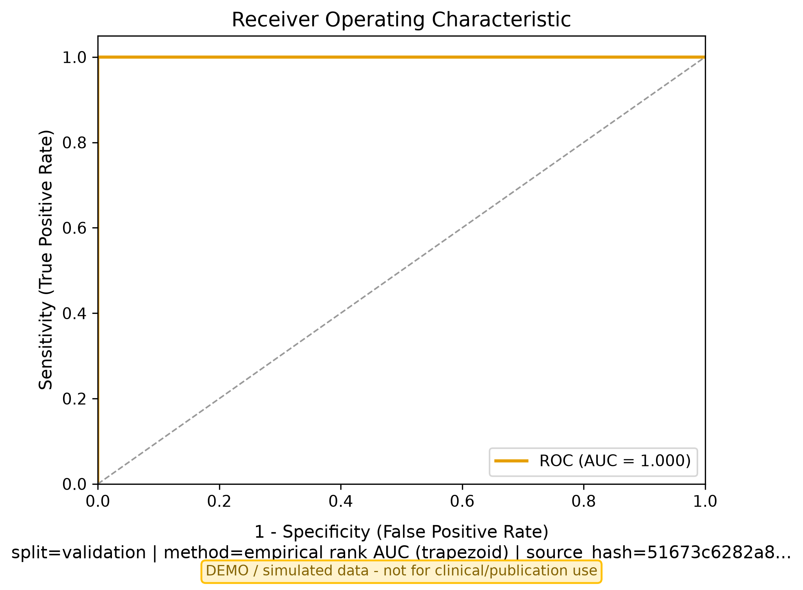
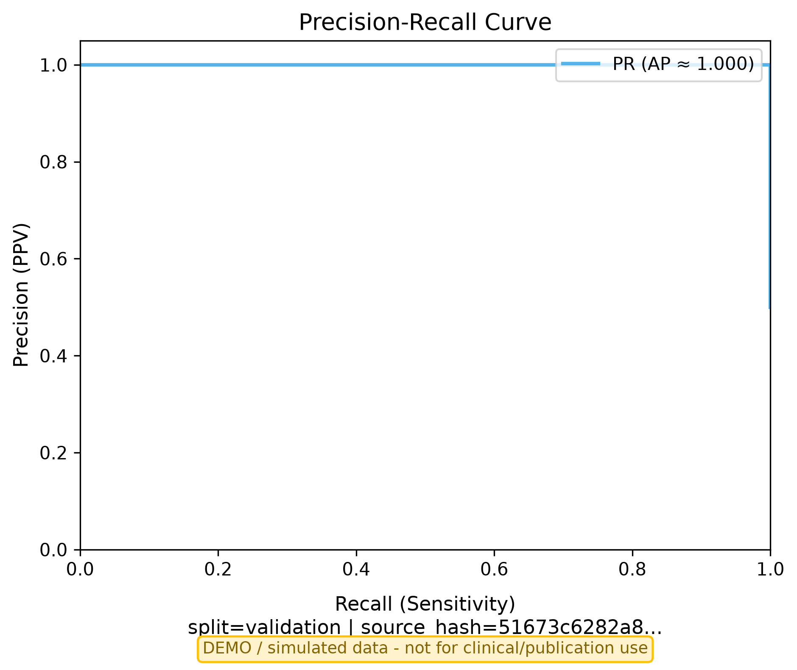
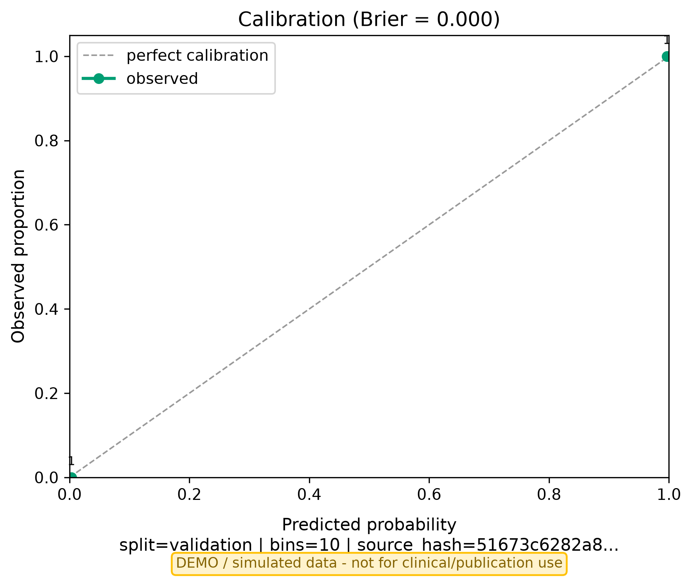
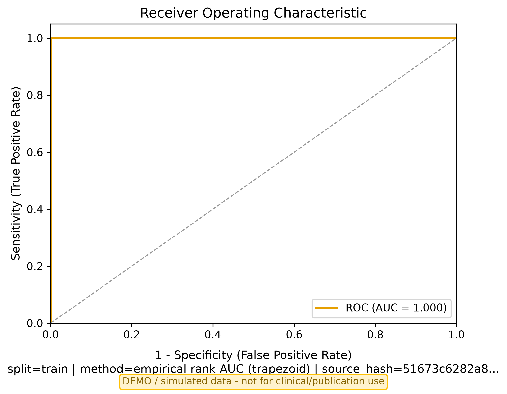

| Field | Value |
|---|---|
| Study Type | diagnostic |
| Data Mode | simulated |
| Endpoint | disease_status |
| Truth Source | outcome |
| Censoring Def |
| Figure | Split | Status | File | Metadata |
|---|---|---|---|---|
| roc | validation | generated | roc_curve.png | auc=1.0, n=2, n_pos=1, n_neg=1, method=empirical rank AUC (trapezoid) |
| pr | validation | generated | pr_curve.png | ap=1.0, n=2, n_pos=1, n_neg=1 |
| calibration | validation | generated | calibration_curve.png | brier=0.0, bins=10, n=2 |
| roc | train | generated | roc_curve_train.png | auc=1.0, n=8, n_pos=4, n_neg=4, method=empirical rank AUC (trapezoid) |

roc | split=validation | auc=1.0, n=2, n_pos=1, n_neg=1, method=empirical rank AUC (trapezoid)

pr | split=validation | ap=1.0, n=2, n_pos=1, n_neg=1

calibration | split=validation | brier=0.0, bins=10, n=2

roc | split=train | auc=1.0, n=8, n_pos=4, n_neg=4, method=empirical rank AUC (trapezoid)
Displays the just-before counts from the KM risk table.
| Item | Status |
|---|---|
| STARD_2015 | partial |
| TRIPOD_AI | partial |
| PROBAST_AI | not_completed |
| Warning / Missing | |
|---|---|
| simulated diagnostic data | |
| Test | Result |
|---|---|
| required_fields | PASS |
| input_integrity | PASS |
| sample_flow_non_empty | PASS |
| endpoint_indicator_match | PASS |
| numbers_consistency | PASS |
| censoring_encoding | PASS |
| train_val_isolation | PASS |
| no_fictional_external | PASS |
| no_unsubstantiated_clinical_claims | PASS |
| metric_validity | PASS |